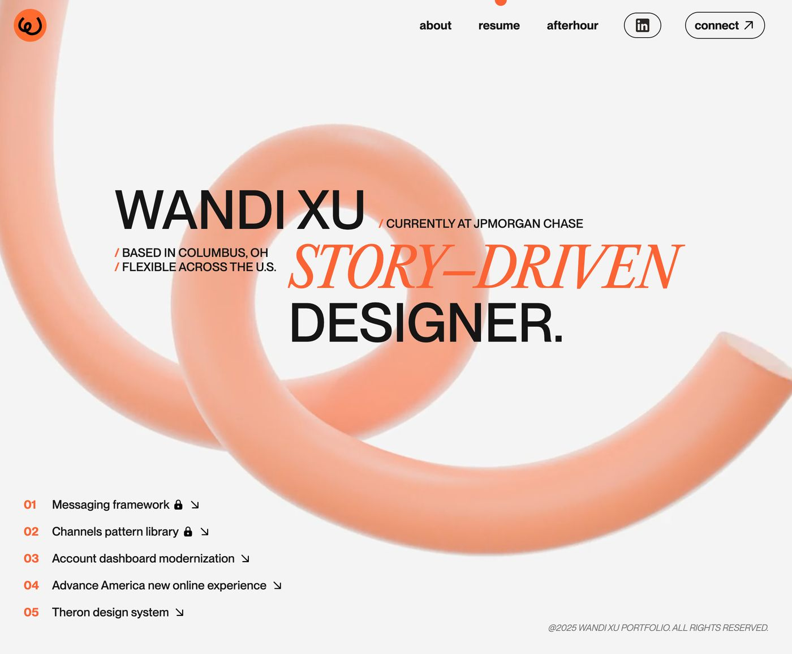
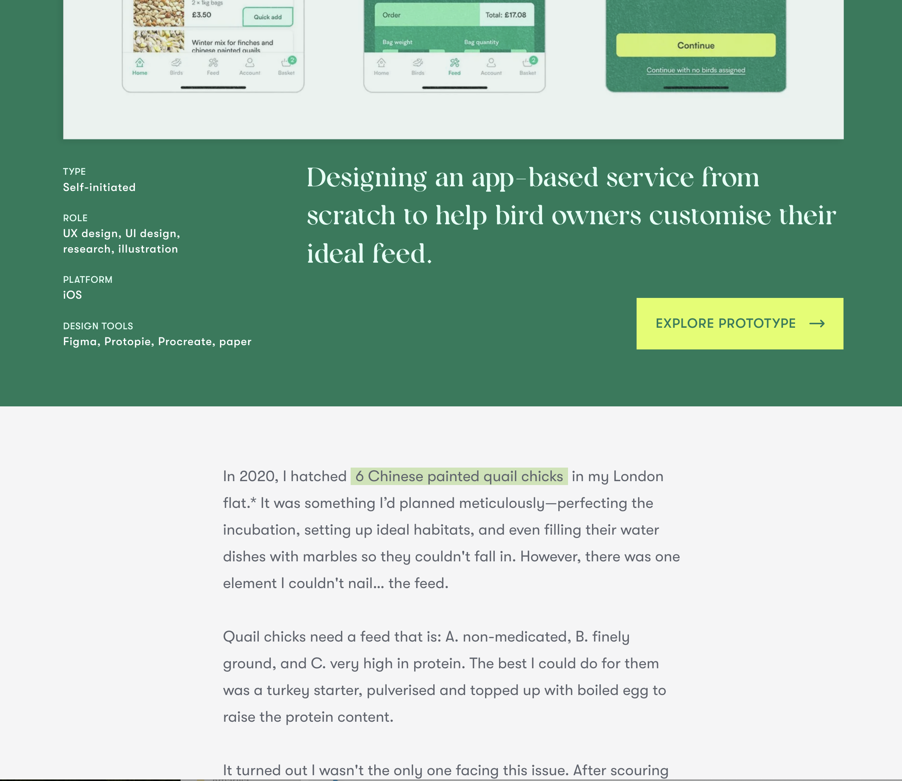
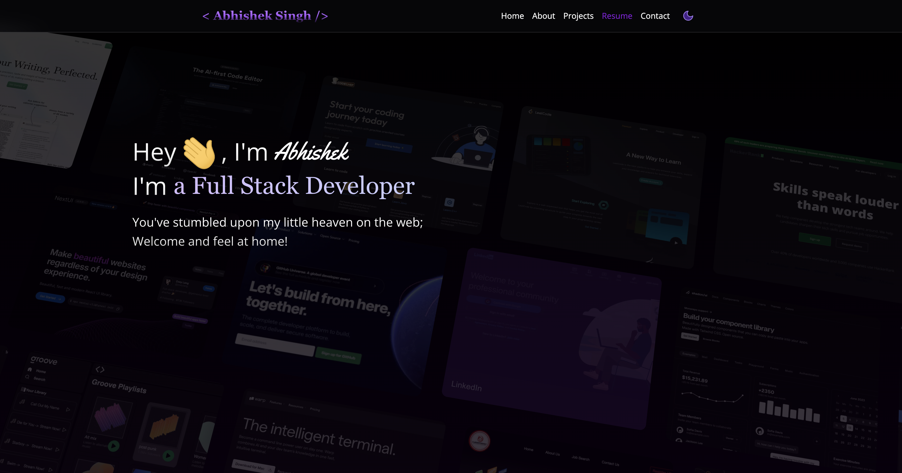
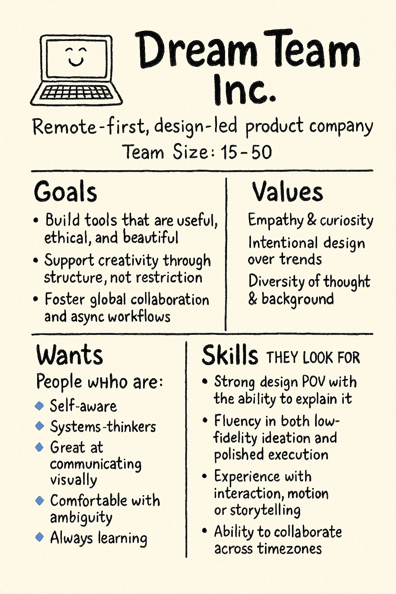
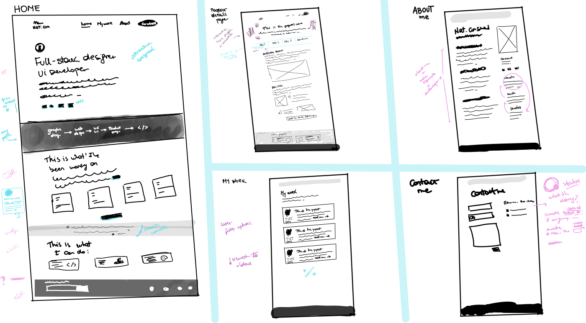
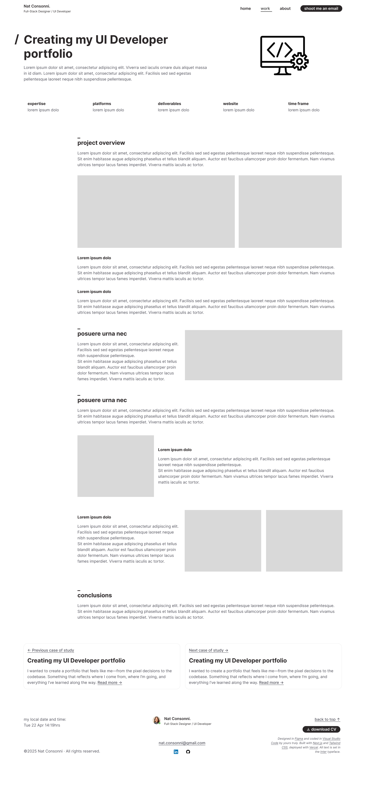

/Creating my UI Developer portfolio (Part 1)
I wanted to create a portfolio that feels like me—from the pixel decisions to the codebase. Something that reflects where I come from, where I’m going, and everything I’ve learned along the way.
Who I am
After over a decade crafting digital experiences—4 years working as a Product Designer, 6 more as a UX/UI Designer, and even earlier days as a Web Designer—I found myself wanting to stretch beyond the boundaries of design tools.
I’ve always been drawn to the sweet spot where technology, creativity, and human-centered thinking meet. I don’t really see them as separate things—just different expressions of problem-solving. So in 2025, I decided to go all in and start a new chapter: becoming a Full-Stack Developer.
To support that transition, I joined the 52-week Full-Stack Developer program at Coderhouse, and I set a parallel goal for myself:
→ Design and build my own portfolio from scratch
This project would be my test lab. My case study. My playground. And ultimately, a space to showcase everything I know—product, design, front-end, and beyond.
Why build a portfolio this way?
I already had design portfolios in the past, but they were always focused on visuals or UX processes. As I grew more fluent in development, those felt… incomplete.
I wanted a portfolio that wasn’t just a container of images—it needed to reflect how I think, how I build, and how I solve problems across disciplines.
I also wanted something that would evolve _with_ me, rather than feel like a static portfolio that’s frozen in time.
This meant:
- Designing and developing everything myself
- No “buy this theme” buttons
- Thinking like a client, a developer, and a hiring manager—simultaneously
- Documenting the process as I went, to reflect on what I learned
Research & inspiration
I started the way I would with any product challenge: research.
I deep-dived into design portfolios, developer case studies, and hybrid profiles that lived between the two. Some were inspirational, others were more practical. A few stood out because they felt human and honest.
Some highlights:
-

wandixu.com
Wandi Xu’s portfolio stood out to me because it’s a great example of coherence between branding, motion, and personality. The transitions and animations felt intentional—not just trendy, but aligned with her voice and visual identity. Her use of Lottie and Blender was particularly intriguing. I hadn’t explored those tools deeply before, but seeing them used this way made me think more critically about how motion could support (not distract from) a portfolio’s storytelling. It pushed me to think beyond static visuals and toward more expressive, interactive elements that still feel minimal and purposeful.
-

ellencovey.com/the-beakery
What stood out to me immediately in this case study is how deeply the storytelling is woven into every stage of the design process — from the personal anecdote that kicks off the project to the way each UX decision is grounded in genuine user insight. It doesn’t just walk through a process — it invites the reader into a real-life problem space and shows how design can solve something meaningful. I’d love to channel into my own case studies this layered narrative structure- this dynamic pacing makes the entire study feel like a journey instead of a static checklist.
-

abhishekworks.com
This portfolio caught my attention because of the way it uses interactive motion and layout shifts to guide the browsing experience. While the color palette wasn’t quite my taste and the layout felt a bit crowded at times, I appreciated how the hero section reacts to hover—each case study image subtly animates, giving a sense of liveliness without needing much explanation. As you scroll, elements smoothly reflow and reposition, almost like they’re arranging themselves for you. It made me think more about how motion can support clarity and hierarchy in a more dynamic, user-led way.
I went through a few other portfolios and I took notes on:
- How content was structured
- What tone felt approachable and professional
- Layout patterns that made reading enjoyable
- Subtle animations and interactivity that added delight without distraction
User Personas
Designing a portfolio for myself felt natural—until I hit the part where I was supposed to define a "user persona." At first, I was stuck. Portfolios aren’t traditional products with end-users and pain points—they’re personal. But then I reframed it. Instead of designing for a user, I started thinking about the kind of company or team I’d love to work with. That gave me clarity. I wasn’t just designing a site—I was designing a conversation starter with the people I hope to collaborate with. So, I created this persona to represent the kind of studio, company, or team that would feel like a great mutual fit.
Strategy & planning
Before jumping into design or code, I defined my goals:
- Practice what I’m learning in full-stack development in a real-world context
- Showcase my hybrid skillset — product thinking, visual design, and development
- Create a system I can expand, iterate on, and use as a foundation for other projects
- Use it as a storytelling space to go deeper than surface-level portfolios
I mapped out a simple site architecture with just what was essential:
- Homepage: A quick intro and overview (I want to be clear from the start who I am and what I do)
- About: My background and philosophy
- Work: Case studies and project breakdowns
- Playground: A section for experiments and fun mini-projects (this one I would probably leave it for a later stage, since pulling up togheter the real-life case of studies it's going to take me some time)
- Contact: Simple and straight to the point
From there, I moved on to content structure. What do I want hiring managers to learn about me? How do I explain the kind of designer-dev hybrid I am without sounding robotic or like I’m trying too hard?
That reflection helped me write draft intros, pull stories from past projects, and outline the case studies I’ll be publishing soon.
Sketching the first concepts
Because my design background leans product-first, I didn’t open Figma right away.
Instead, I started with some shetches on my iPad. I explored layout structures, navigation ideas, and content hierarchies. I played with a few wild ideas before refining what felt honest, clear, and uniquely mine.
Once I had a direction, I moved into Figma to create low-fidelity wireframes and then high-fidelity mockups. I prioritized:
- Readability over trends
- Accessible contrast and typography
- Mobile-first, scalable design
- A visual language that feels crafted, not over-designed
Mockups & prototype
After finishing the sketches, I transitioned into creating the mockups. This step was mostly about bringing the layout to life—introducing color, typography, and visual texture.
I also designed subtle brand elements (like a minimal logo, color palette, and icon style) to give the site a personal, cohesive feel without screaming "brand identity".
Wrapping things up...
Designing the projects' detail page was where things started to get real—balancing structure, visual hierarchy, and flexibility so that it could work as a reusable template for future case studies… not as easy as it sounds! I’m still fine-tuning how I want to break down and present each project in a clear, scalable way that’s both informative and digestible.
Also, can we talk about footers for a second? 😅
You’d think it’d be the easiest part of the site, but somehow that final section always trips me up. Finding the right balance between usefulness, personality, and not letting it drag on forever is a whole design challenge in itself.
But hey—progress is progress. One pixel (and line of code) at a time.
What’s next
Now that the design foundations are in place, the next step is bringing it all to life in the browser. The plan is to start translating these mockups into clean, scalable HTML and CSS—and make sure it feels just as smooth and intentional as it looks.
In Part 2, I’ll walk through the development phase:
- How I structured the site with semantic HTML and modular Sass
- My approach to responsiveness using custom media query mixins
- Handling animations, accessibility, and performance
- Challenges I faced translating design into code (and what I’d do differently)
For Hiring Managers & collaborators
If you’re looking for someone who can move between product, design, and development with intention—this portfolio is just the start.
Let’s build something together - 📩 [get in touch]
- Dovetail
- Mixpanel
- FullStory
- Documents
- Sheets
- Figma
- Miro
- Jira
- Html
- Github
- Next.js
- React
- Angular
I worked with Natalia on BatangaMedia, she worked as UX Designer and developed with drupal. She did the assets I needed for the mobiles apps as iMujer, BolsaDeMulher, etc. She is a responsable professional, with so much experience, she knows how to work in scrum team, and she is all the time updating her knowledge."
Marcia Gilardi - Android Developer at Rappi
During her time as a freelancer in Dixtra, we were always able to rely on Natalia's organization and commitment. She is a proactive and creative person, always willing to help others and with a good sense of humor."
Mauricio García - Founder & Director @ Dixtra
Natalia is a responsible, organized and very creative person. She always works with enthusiasm and commitment, and integrates well with the rest of the team members. It was great to work with her and I wish her the best."
Fabian Fernandez Bargas - CEO @ Lineup
Me tocó trabajar con Nati en su pasaje por el equipo de Desarrollo Web de Batanga Media Uruguay. Es una persona proactiva y autodidacta, a la cual vi crecer y afianzarse como diseñadora web del equipo en un corto período de tiempo, cumpliendo siempre los objetivos que el equipo se proponía, además de sumarle mucha buena onda al ambiente laboral."
Nicolás Previale - Senior Product Manager at Marely Spoon